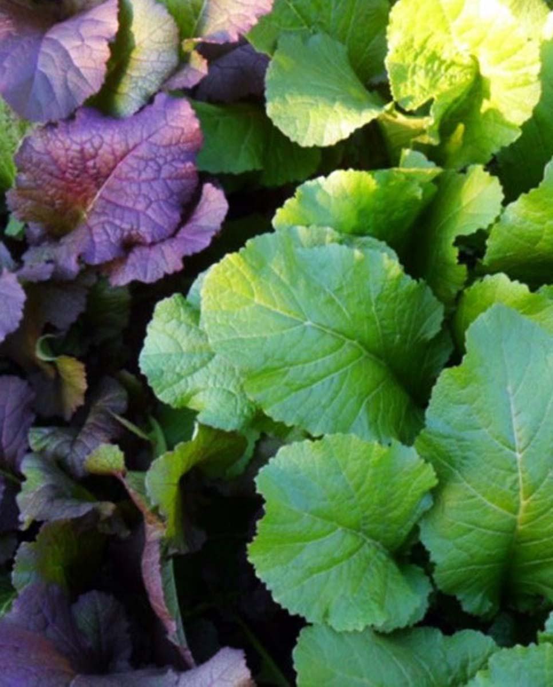

"여수 돌산 갓은
따뜻한 해풍과 황토에서 자라 섬유질이 부드럽고
특유의 알싸한 맛이 뛰어납니다."
Our Story
여수 돌산도에서
20년 넘게
이어온
한 맛의 약속
전라남도 여수시 돌산도의 해풍을 맞고 자란 갓은 다른 지역 갓과는 향과 질감이 전혀 다릅니다. 수연갓김치는 이 귀한 돌산갓을 20년 넘는 경험으로 담가, 그 진한 풍미를 고객님 식탁까지 그대로 전해드립니다.
- 🌊 돌산도 해풍과 염분이 만들어낸 독특한 갓 향미
- 🧂 천일염만 사용, 화학 첨가물 전혀 없음
- ❄️ 저온 숙성으로 유산균 풍부하게 보존
- 📦 주문 즉시 담가 산지직송, 최상의 신선도 보장